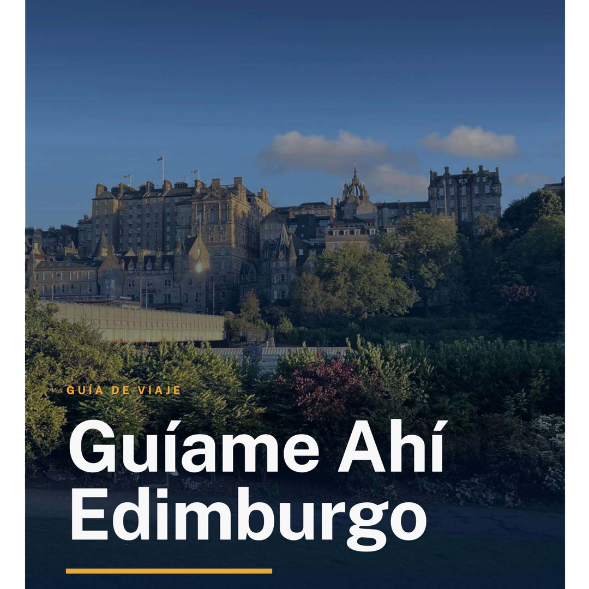

Guíame Ahí - Edinburgh
Restaurantes, pubs, whisky, souvenirs, poemas y curiosidades — todo lo que he ido guardando en mis años viviendo aquí, en un solo lugar que se actualiza directamente desde mis notas.
🧳 Prácticos para tu viaje
🧳 Prácticos para tu viaje
1️⃣ Elige un tema — 2️⃣ Pica para desplegar
Alimento: Foodie Guide 🍖 🛅
International
https://maps.app.goo.gl/DzuQEqyMSiFF5P8EA?g_st=ipc
https://maps.app.goo.gl/Uy6HpfX2jmir2ktG6?g_st=com.google.maps.preview.copy
https://maps.app.goo.gl/NqkGwmvMqyYvoBke9?g_st=ic
https://maps.app.goo.gl/oEWLpHxh3vsEQWND9
https://maps.app.goo.gl/gHZ5tLegVwNBvzYQ8
https://maps.app.goo.gl/MXtqQU55UGKAdtjo7?g_st=ipc
https://maps.app.goo.gl/KonrG9idvRp4hiM28
https://maps.app.goo.gl/R8iuqMwqSMzodxxR8
https://maps.app.goo.gl/2VCRb2XN1XCZT4nX9
https://maps.app.goo.gl/38DHtkGMfy5toZmm7?g_st=ipc
https://maps.app.goo.gl/YdyPdgvS7SduUwnz6
https://maps.app.goo.gl/Wm75SuHGfwdUhMkq8?g_st=com.google.maps.preview.copy
https://maps.app.goo.gl/MrfKkToo1UiFXYvb8
https://maps.app.goo.gl/p8vCPJrf1dWDuJ4b6
https://maps.app.goo.gl/RbjRQwLP8A6nb1NC8
https://maps.app.goo.gl/VVzdj4yFLhStFnJr9?g_st=com.google.maps.preview.copy
https://maps.app.goo.gl/Egnn8Rw8Rf8QwQ6d6?g_st=com.google.maps.preview.copy
https://maps.app.goo.gl/C2K8pJ7jubpS9rj98
https://maps.app.goo.gl/QuPCXqb4c9svBscd6
https://maps.app.goo.gl/Va4NHnT6ov1DqH379
https://maps.app.goo.gl/2e8Gi8phU6iXESf1A
https://maps.app.goo.gl/SJgE6WVKJi7LW5rK7
https://maps.app.goo.gl/9hGMfS7G9w49aNoQA?g_st=com.google.maps.preview.copy
https://maps.app.goo.gl/CoxGiXbW7mTAGPxt9?g_st=ipc
https://maps.app.goo.gl/V519vtXuAtuMoKe86?g_st=ic
Pubs (tambien se come)
https://maps.app.goo.gl/xvNSarAfFsQTgqG67
https://maps.app.goo.gl/wnNKVt2woM8Sj9UT9
https://maps.app.goo.gl/KBmyv8i2vrXxpF9E8
https://maps.app.goo.gl/EXqFzsoth3RB1hiq6
https://maps.app.goo.gl/brC7xbv3VwmpVbnD9?g_st=com.google.maps.preview.copy
https://maps.app.goo.gl/qFmYXqiwsqzmY6DT7
https://maps.app.goo.gl/gqRLXhiRHdPUxwD97?g_st=com.google.maps.preview.copy
https://maps.app.goo.gl/YKADF7CK6LHQaihB7
https://maps.app.goo.gl/jfUBjJ4mEFprgTKaA
https://maps.app.goo.gl/aVkd9czDGJRgmvrMA
https://maps.app.goo.gl/EkCQVxB75wEKR4Vg7
https://maps.app.goo.gl/27w8QD6NZywRGz6k8?g_st=com.google.maps.preview.copy
https://maps.app.goo.gl/Zo4BGsmtrXRypN2J6?g_st=com.google.maps.preview.copy
https://maps.app.goo.gl/wPHQiQbjeWwHTj3Q7
https://maps.app.goo.gl/CFBUQFFU56UBhxm76
https://maps.app.goo.gl/2VCRb2XN1XCZT4nX9
https://maps.app.goo.gl/HH7inRqw57ULwm5a8?g_st=ipc
https://maps.app.goo.gl/JeptnMqL8R51ZcXo9
https://maps.app.goo.gl/QgCPd4YSeuDnKAJW8
https://maps.app.goo.gl/qe37U8assgb1Vp5i9?g_st=ipc
https://maps.app.goo.gl/QZSNjqMRj4pGbGzk9?g_st=com.google.maps.preview.copy
https://maps.app.goo.gl/T3Aqd1uEcqNREsPp7?g_st=com.google.maps.preview.copy
https://maps.app.goo.gl/xGrj81vPBuYJn7RR8?g_st=ipc
https://maps.app.goo.gl/boQ42zMG4hGhKGQq6?g_st=ipc
https://maps.app.goo.gl/QDtPKPrb9oM3ThGn6?g_st=ipc
https://maps.app.goo.gl/yEpftBkaWNbtuv5u8?g_st=ipc
For Mornings / Lunch
https://maps.app.goo.gl/Zp73UB14nMhAYbiHA
https://maps.app.goo.gl/FXYh3wmueEjcy5ux5
https://maps.app.goo.gl/XjXtBEatjG7UZ98q9
https://maps.app.goo.gl/PRRKpWGqW3ktKE387
https://maps.app.goo.gl/1Hwx3symnKkJjbQJ8
https://maps.app.goo.gl/t4MgBDtwC5Xk4VZN9
https://maps.app.goo.gl/rHL8RdUn9kvoDTNx7
https://maps.app.goo.gl/4krRTL2XrSsigo5v6
Afternoon Tea, of course! 🫖 ☕
Panito y Cafee
https://maps.app.goo.gl/G4o4SZLy75tCqhHJA
https://maps.app.goo.gl/9dWVgbJKYhP7bJER6
https://maps.app.goo.gl/SBYQThAjY33r2iz66
https://maps.app.goo.gl/TXEgy17KzKwBkfnD9?g_st=ipc
https://maps.app.goo.gl/RLszs3sCUr1S3Mzu8
https://maps.app.goo.gl/UYvDzyETmrUQGZh37
https://maps.app.goo.gl/idgnS9zcKabXiPKG6?g_st=com.google.maps.preview.copy
https://maps.app.goo.gl/rPeoe6q7sx5ASc6HA
https://maps.app.goo.gl/GjqgvL7qw8QhbiEP6
https://maps.app.goo.gl/wVFcdScDbd2nx2zx6
https://maps.app.goo.gl/5ZCBKw6uW9JL35uaA
https://maps.app.goo.gl/TKcgYsqbsx92ZJ8y8?g_st=ipc
https://maps.app.goo.gl/kKwpmjgMknmzLyfo9?g_st=ipc
Helado
https://maps.app.goo.gl/84Ax4CtgEePs8xgB6?g_st=com.google.maps.preview.copy
https://maps.app.goo.gl/vSeXyxTQeJtBNcsW9?g_st=com.google.maps.preview.copy
https://maps.app.goo.gl/J3bD1LmYQBfjBG2u8?g_st=com.google.maps.preview.copy
https://maps.app.goo.gl/iU8aSNz4qqMR5Q2bA?g_st=com.google.maps.preview.copy
Whisky & Gin Experiences 🥃
https://www.scotchwhiskyexperience.co.uk/
https://smws.com/
https://holyrooddistillery.co.uk/
https://www.leithdistillery.com/
https://www.edinburghgin.com/
https://maps.app.goo.gl/Eej7sDKMiGKPCq9b7?g_st=ipc
https://maps.app.goo.gl/HySbZPbDUdp79TFv8?g_st=ipc
https://isleofcolldistillery.com/#hebridean
https://maps.app.goo.gl/oD9CCHeaW8gizv277?g_st=ipc
https://maps.app.goo.gl/e9yB4by4BwG1bVcR8?g_st=ipc
https://maps.app.goo.gl/Hk5ovFLQRhPaKkit6?g_st=ipc
Ceilidh Baile, música y cervecita 💃🏻 🕺🏻 🍺
https://maps.app.goo.gl/PXKMPbtkF9f5U8cM9?g_st=ic
https://maps.app.goo.gl/LuPcJGRuYvvZoWe7A?g_st=ic
https://maps.app.goo.gl/cK6XSvwU1d3fd2pm9?g_st=ic
https://maps.app.goo.gl/v2Gzav5Re9psayxv9?g_st=ic
https://maps.app.goo.gl/jMzoiucywY9qFR199
Museos y bóvedas 🎨
https://www.edinburghmuseums.org.uk/venue/writers-museum
https://www.edinburghmuseums.org.uk/venue/museum-edinburgh
https://www.nms.ac.uk/national-museum-of-scotland
https://maps.app.goo.gl/oPYAwvnd6AmsHefg6?g_st=ipc
http://www.thedungeons.com/
https://www.cityofthedeadtours.com/
https://www.auldreekietours.com/
https://www.auldreekietours.com/tours/the-vaults-tour/
https://www.stcecilias.ed.ac.uk/
https://museum.rcsed.ac.uk/
https://biomedical-sciences.ed.ac.uk/anatomy/anatomical-museum
https://www.rcpe.ac.uk/heritage/physiciansgallery
https://edinburghmagicmuseum.com/
https://www.nationalgalleries.org/art-and-artists/collections
https://museumonthemound.com/
https://www.stcecilias.ed.ac.uk/
https://camera-obscura.co.uk/
https://www.thetartanweavingmill.co.uk/
https://visit.roe.ac.uk/
https://www.grandlodgescotland.com/freemasons-hall/
https://www.scottishstorytellingcentre.com/john-knox-house/
https://www.edinburghzoo.org.uk/
https://www.deepseaworld.com/visitor-info/getting-here/
https://maps.app.goo.gl/stNiTCm9PLFDcfRu9?g_st=ipc
Montañas, Camping & Glamping por Escocia 🏕️
https://maps.app.goo.gl/LXfhAbyFpwnfDybh9
https://maps.app.goo.gl/HGpKfHJisehTuG3r9?g_st=com.google.maps.preview.copy
https://maps.app.goo.gl/6nHxturFKFiHUdgo6
https://maps.app.goo.gl/GvrsDzy96t7phS3V7?g_st=ipc
https://maps.app.goo.gl/PaDZ91FABKnKFoKx7?g_st=com.google.maps.preview.copy
https://themunrosociety.com/
Cambio de Divisas💷🪙
Los Post Offices son la mejor opción. Cerca del centro de Edinburgh:
https://maps.app.goo.gl/cfhdvWiWY8Xucxxb6?g_st=ipc
https://maps.app.goo.gl/Yh1UjoyXqrWjYtoT7?g_st=ipc
https://maps.app.goo.gl/uSZTLFx8T1VEsSSVA?g_st=ipc
Shopping! 🛍️
Ropa (Tartan y Cashmere por ejemplo)
https://maps.app.goo.gl/5RRgFbVzs7P2r5dMA?g_st=ipc
https://maps.app.goo.gl/ysshnDxQDToZz4ct8?g_st=ipc
https://maps.app.goo.gl/yuZyQrc4iiWSbt1c7
https://maps.app.goo.gl/3MoovTspzxs377HA7?g_st=com.google.maps.preview.copy
https://maps.app.goo.gl/aHfwozBv8fwjh1LZ6
https://maps.app.goo.gl/UcYsZa93kMb1gmAY6?g_st=ipc
https://maps.app.goo.gl/7531SFyHc9oYdMQGA?g_st=com.google.maps.preview.copy
https://maps.app.goo.gl/yQAud1XMsf6JoJzQ6?g_st=ipc
https://maps.app.goo.gl/MxcS1KwTLTJck6Yh6?g_st=ipc
https://maps.app.goo.gl/GnnGKVwBJajpy5Uv5?g_st=com.google.maps.preview.copy
https://heartsdirect.co.uk/
https://maps.app.goo.gl/95CU9FBafeQ5dz879?g_st=ipc
Teashop
Whisky
https://maps.app.goo.gl/jDUCJjqxMANL7ws16?g_st=com.google.maps.preview.copy
https://maps.app.goo.gl/P6GzaUkyxPBA4KSD6?g_st=com.google.maps.preview.copy
https://maps.app.goo.gl/14sKoVSqPEYoH4pY7?g_st=com.google.maps.preview.copy
https://maps.app.goo.gl/X2dXmNCsBAGQLzG76?g_st=com.google.maps.preview.copy
https://maps.app.goo.gl/WqHKThPjWhNTVJd4A?g_st=com.google.maps.preview.copy
https://maps.app.goo.gl/LwLWnDQeRedCJupL6?g_st=com.google.maps.preview.copy
https://maps.app.goo.gl/cBHehnsHjpi8E5r49?g_st=com.google.maps.preview.copy
Cultural landscape
Libros 📚
Souvenirs de Harry Potter
Tabaco
https://www.smidgeup.com/
Autobús 🚌
Jardines, paseos y castillos 🏰
https://www.rct.uk/visit/palace-of-holyroodhouse
https://www.edinburghcastle.scot/
https://www.jupiterartland.org/
https://maps.app.goo.gl/2coy8fjvmJCav3nQ6?g_st=ipc
https://maps.app.goo.gl/MuroSVJvAWxffyFMA?g_st=ipc
https://maps.app.goo.gl/NkzH7r3mKBMVEsjf9?g_st=ic
https://maps.app.goo.gl/RZ1WZ5GoZcHSezti7?g_st=com.google.maps.preview.copy
https://maps.app.goo.gl/KMWsZMkv6Ku1SoEY6?g_st=ipc
https://maps.app.goo.gl/MtKXHFrm9XWjUqLR7?g_st=ipc
https://maps.app.goo.gl/4k9Q15Cx5sNNmpp18?g_st=ipc
https://maps.app.goo.gl/s5QkdkdxJRyZgksh8?g_st=ipc
https://maps.app.goo.gl/VcMgm9XN1PJYQT7Y7?g_st=ipc
https://maps.app.goo.gl/uqWkPZ11HjxNUWXA8?g_st=ipc
https://maps.app.goo.gl/RfDSepwCT8awR8rM7?g_st=ipc
https://maps.app.goo.gl/78essNRx4c6imyVB6?g_st=ipc
https://maps.app.goo.gl/RTuddMNFpD79iDHf8?g_st=ipc
https://maps.app.goo.gl/AbPBZQbdvTB8Z2fPA?g_st=ic
https://maps.app.goo.gl/mxUAw2znq7SmjmtZ8?g_st=ipc
https://www.historicenvironment.scot/visit-a-place/places/stirling-castle/
https://www.historicenvironment.scot/visit-a-place/places/linlithgow-palace/
https://westcoastrailways.co.uk/jacobite/steam-train-trip
https://maps.app.goo.gl/4PboKewMhQZPBgqFA?g_st=ipc
Festivales de Agosto 🎪
https://www.edintattoo.co.uk/
https://www.edfringe.com/
https://www.eif.co.uk/
https://assemblyfestival.com/
https://www.edinburghartfestival.com/
https://www.edbookfest.co.uk/
https://www.edfilmfest.org/
✨ Frases y curiosidades
✨ Frases y curiosidades
1️⃣ Elige un tema — 2️⃣ Pica para desplegar
Address to a Haggis (by R. Burns)
Fair fa’ your honest, sonsie face,
Great Chieftain o’ the Puddin-race!
Aboon them a’ ye tak your place,
Painch, tripe, or thairm:
Weel are ye wordy of a grace
As lang ‘s my arm.
The groaning trencher there ye fill,
Your hurdies like a distant hill,
Your pin wad help to mend a mill
In time o’ need,
While thro’ your pores the dews distil
Like amber bead.
His knife see Rustic-labour dight,
An’ cut ye up wi’ ready slight,
Trenching your gushing entrails bright,
Like onie ditch;
And then, O what a glorious sight,
Warm-reekin, rich!
Then, horn for horn, they stretch an’ strive:
Deil tak the hindmost, on they drive,
Till a’ their weel-swall’d kytes belyve
Are bent like drums;
Then auld Guidman, maist like to rive,
Bethankit hums.
Is there that owre his French ragout,
Or olio that wad staw a sow,
Or fricassee wad mak her spew
Wi’ perfect sconner,
Looks down wi’ sneering, scornfu’ view
On sic a dinner?
Poor devil! see him owre his trash,
As feckless as a wither’d rash,
His spindle shank a guid whip-lash,
His nieve a nit;
Thro’ bluidy flood or field to dash,
O how unfit!
But mark the Rustic, haggis-fed,
The trembling earth resounds his tread,
Clap in his walie nieve a blade,
He’ll make it whissle;
An’ legs, an’ arms, an’ heads will sned,
Like taps o’ thrissle.
Ye Pow’rs wha mak mankind your care,
And dish them out their bill o’ fare,
Auld Scotland wants nae skinking ware
That jaups in luggies;
But, if ye wish her gratefu’ prayer,
Gie her a Haggis!
Freedom (by J. Barbour)
Ah, freedeom is a noble thing!
Freedom makes man to have liking!
Freedom all solace to man gives:
He lives at ease that freely lives!
A noble heart may have none ease,
Nor ellys nought that may him please,
If freedom fail: for free liking
Is yearned owre all other thing.
Nor he, that has aye lived free,
May not know well the property,
The anger, nor the wretched doom,
That is coupled to foul thraldom.
But, if he had essayed it,
Then all perquer he should it wit;
And should think freedom more to prize
Than all the gold in world that is.
Auld Lang Syne (by R. Burns)
Should auld acquaintance be forgot,
And never brought to mind?
Should auld acquaintance be forgot,
And auld lang syne!
Chorus
For auld lang syne, my dear,
For auld lang syne.
We’ll tak a cup o’ kindness yet,
For auld lang syne.
And surely ye'll be your pint stowp!
And surely I’ll be mine!
And we’ll tak a cup o’ kindness yet,
For auld lang syne.
Chorus
We twa hae run about the braes,
And pou’d the gowans fine;
But we’ve wander’d mony a weary fit,
Sin’ auld lang syne.
Chorus
We twa hae paidl’d in the burn,
Frae morning sun till dine;
But seas between us braid hae roar’d
Sin’ auld lang syne.
Chorus
And there’s a hand, my trusty fere!
And gie’s a hand o’ thine!
And we’ll tak a right gude-willie waught,
For auld lang syne.
Chorus
Lady of the Lake (Canto I, by W. Scott)
Harp of the North! that mouldering long hast hung
On the witch-elm that shades Saint Fillan's spring
And down the fitful breeze thy numbers flung,
Till envious ivy did around thee cling,
Muffling with verdant ringlet every string,—
O Minstrel Harp, still must thine accents sleep?
Mid rustling leaves and fountains murmuring,
Still must thy sweeter sounds their silence keep,
Nor bid a warrior smile, nor teach a maid to weep?
Not thus, in ancient days of Caledon,10
Was thy voice mute amid the festal crowd,
When lay of hopeless love, or glory won,
Aroused the fearful or subdued the proud.
At each according pause was heard aloud
Thine ardent symphony sublime and high!
Fair dames and crested chiefs attention bowed;
For still the burden of thy minstrelsy
Was Knighthood's dauntless deed, and Beauty's matchless eye.
O, wake once more! how rude soe'er the hand
That ventures o'er thy magic maze to stray;
O, wake once more! though scarce my skill command
Some feeble echoing of thine earlier lay:
Though harsh and faint, and soon to die away,
And all unworthy of thy nobler strain,
Yet if one heart throb higher at its sway,
The wizard note has not been touched in vain.
Then silent be no more! Enchantress, wake again!
Edinburgh (by WT McGonagall)
Beautiful city of Edinburgh!
Where the tourist can drown his sorrow
By viewing your monuments and statues fine
During the lovely summer-time.
I'm sure it will his spirits cheer
As Sir Walter Scott's monument he draws near,
That stands in East Prince's Street
Amongst flowery gardens, fine and neat.
And Edinburgh Castle is magnificent to be seen
With its beautiful walks and trees so green,
Which seems like a fairy dell;
And near by its rocky basement is St Margaret's Well,
Where the tourist can drink at when he feels dry,
And view the castle from beneath so very high,
Which seems almost towering to the sky.
Then as for Nelson's monument that stands on Calton Hill,
As the tourist gazes thereon, with wonder his heart does fill
As he thinks on Admiral Nelson who did the Frenchmen kill,
Then, as for Salisbury Crags, they are most beautiful to be seen,
Especially in the month of June, when the grass is green;
There numerous mole-hills can be seen,
And the busy little creatures howking away,
Searching for worms among the clay;
And as the tourist's eye does wander to and fro
From the south side of Salisbury Crags below,
His bosom with admiration feels all aglow
As he views the beautiful scenery in the valley below;
An ex d if, with an observant eye, the little loch beneath he scans,
He can see the wild ducks about and beautiful white swans.
Then, as for Arthur's Seat, I'm sure it is a treat
Most worthy to be seen, with its rugged rocks and pastures green,
And the sheep browsing on its sides
to and fro, with slow-paced strides,
And the little lambkins at play
During the livelong summer day,
Beautiful city of Edinburgh! the truth to express,
Your beauties are matchless I must confess,
And which no one dare gainsay,
But that you are the grandest city in Scotland at the present day!
Llama a Mckenzie (bajo tu propio riesgo)
1. Ir en la noche
2. Inclinarse a la ventana del mausoleo
3. Repetir 3 veces:
“Bluidy Mackenzie, come out if ye daur, Lift the sneck and draw the bar!“
Biblioteca de la Unidad de Parapsicología Koestler
Harry Potter - Noticias y Melodías
https://www.scotsman.com/topic/harry-potter
https://harrypotter.fandom.com/wiki/Main_Page
https://open.spotify.com/track/12X2MC9gzeAhciIgbQkLAO?si=VsIwNp3LRO-e95kCL3L0Eg&context=spotify%3Asearch%3Ael%2Belfo%2Bsin%2B
https://open.spotify.com/track/5ttVu9xFETiJjKx0OmBKMz?si=O4wSzN4xQqiM_cB31itLnQ&context=spotify%3Asearch%3Ael%2Belfo%2Bsin%2B
https://open.spotify.com/track/2IwU2MsAdSjxn4g0haYUZx?si=Vvip_gXZTGOQI5XQh1Zpmw&context=spotify%3Aalbum%3A2lHqcXaCmWhFUgCU3IneW3
Has escuchado Highland Cathedral? ⛪ 🎤
Esta melodía solemne tiene una historia muy curiosa.
Fue compuesta en 1982 por Ulrich Roever y Michael Korb, alemanes, para un evento local de los Highland Games en Alemania.
Sin embargo, suena tan auténticamente escocesa,
que con el tiempo ha sido convertida en uno de los
himnos no oficiales de Escocia. Más de una vez se ha propuesto
que sea su himno oficial, al igual que Flower of Scotland o Scotland the Brave.
Las gaitas militares la tocan constantemente; por ejemplo,
las grabaciones más populares son interpretadas
por los Royal Scots Dragoon Guards. También ha sonado
en momentos históricos clave, como cuando fue entregado
Hong Kong al gobierno chino, en 1997.
Estadísticamente, es de las melodías más elegidas para bodas: Madonna la eligió para su boda aquí en Escocia, en el castillo de Skibo, en 2000.
"Highland Cathedral" también es el apodo histórico de una iglesia real, llamada St. Columba Gaelic Church, en la ciudad de Glasgow.
Aunque lo parezca, no es un canto de guerra de hace quinientos años... es un regalo alemán que Escocia adoptó como propio!
¿Te sirvió esta guía?
Voy actualizando esta página con lo que encuentro en mis años viviendo aquí. Si te fue útil, invítame un café ☕ — cada uno me ayuda a seguir sumando lugares como estos.


PDFGuía en PDF
Esta página se actualiza sola, pero si prefieres algo que funcione sin señal y con rutas completas, la guía en PDF tiene todo eso y más.
£6.97pago único
Consigue tu guía en PDF